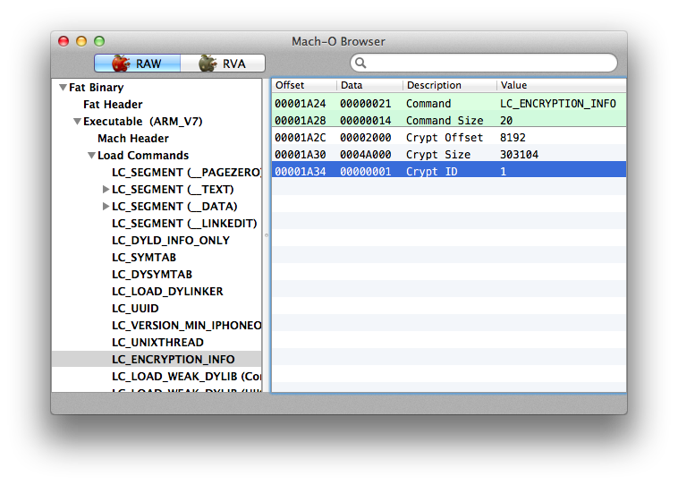

Another “ultimate” guide (he-he :)) to decrypting iOS applications from AppStore. It’s based on my 2 years experience. I hope somebody finds it useful. Questions are welcome in comments.
Install the app you want to disassemble, e.g. Samsung Content Viewer, to a jailbroken iOS device and start it. Then ssh the device and use ps command to list the running processes. Find the app in the list and note the executable location (usually /var/mobile/Applications/...):
# ps ax
PID TT STAT TIME COMMAND
1 ?? Ss 1:52.90 /sbin/launchd
19 ?? Ss 9:47.09 /usr/libexec/UserEventAgent (System)
20 ?? Ss 0:34.87 /usr/libexec/aosnotifyd
...blah blah blah...
7267 ?? SXs 1:45.30 /var/mobile/Applications/90465493-2318-41AC-9624-E91697EB70DA/Samsung Content Viewer.app/Samsung Content Viewer
...blah blah blah...
7471 s001 Ss 0:00.04 -sh
7472 s001 R+ 0:00.01 ps ax
Use scp in Mac console to copy the executable to a local folder:
$ scp root@192.168.1.110:"/var/mobile/Applications/90465493-2318-41AC-9624-E91697EB70DA/Samsung\ Content\ Viewer.app/Samsung\ Content\ Viewer" ./
Again, consider Samsung Content Viewer as an example of a multiple architectures executable. List the architectures:
$ otool -fh Samsung\ Content\ Viewer
Fat headers
fat_magic 0xcafebabe
nfat_arch 2
architecture 0
cputype 12
cpusubtype 9
capabilities 0x0
offset 4096
size 399568
align 2^12 (4096)
architecture 1
cputype 12
cpusubtype 11
capabilities 0x0
offset 405504
size 399568
align 2^12 (4096)
Samsung Content Viewer (architecture armv7):
Mach header
magic cputype cpusubtype caps filetype ncmds sizeofcmds flags
0xfeedface 12 9 0x00 2 36 4364 0x00200085
Samsung Content Viewer (architecture armv7s):
Mach header
magic cputype cpusubtype caps filetype ncmds sizeofcmds flags
0xfeedface 12 11 0x00 2 36 4364 0x00200085
Choose the architecture you want to disassemble, for example armv7, and remember offset from the output above (4096 for armv7 in the output). Then use otool to find encrypted offset/size for the architecture you want to disassemble, e.g. for armv7:
$ otool -arch armv7 -l Samsung\ Content\ Viewer | grep crypt
cryptoff 8192
cryptsize 303104
cryptid 1
Now ssh the iOS device, connect debugserver to the application (remember? it’s still running), then connect lldb to debugserver and find offset of the executable image in memory:
(lldb) image list Samsung\ Content\ Viewer
[ 0] 87CACFC1-CD0D-3572-A454-20EEB4C20DA6 0x0003e000 /var/mobile/Applications/90465493-2318-41AC-9624-E91697EB70DA/Samsung Content Viewer.app/Samsung Content Viewer (0x000000000003e000)
For the example above, the image offset is 0x0003e000.
Warning! Two important things:
Then dump the the encrypted part of the executable. Use the following lldb command:
(lldb) memory read --force --outfile ./decrypted.bin --binary --count <cryptsize> <image offset>+<cryptoff>
For Samsung Content Viewer:
(lldb) memory read --force --outfile ./decrypted.bin --binary --count 303104 0x0003e000+8192
Finally, backup the Samsung\ Content\ Viewer executable
$ cp Samsung\ Content\ Viewer Samsung\ Content\ Viewer-orig
and insert decrypted.bin into the executable
$ dd seek=12288 bs=1 conv=notrunc if=./decrypted.bin of=./Samsung\ Content\ Viewer
where 12288=4096+8192 is the offset for armv7 architecture (see the output of otool -fh above) plus cryptoff. Optionally, to make the executable suitable for some tools (e.g. class-dump-z), you can set cryptid to 0 (see “Setting cryptid to 0” below).
For a single architecture with a fat header, e.g. for Kik executable, the dump looks like
$ otool -fh Kik
Fat headers
fat_magic 0xcafebabe
nfat_arch 1
architecture 0
cputype 12
cpusubtype 9
capabilities 0x0
offset 16384
size 9533024
align 2^14 (16384)
Kik-decrypted (architecture armv7):
Mach header
magic cputype cpusubtype caps filetype ncmds sizeofcmds flags
0xfeedface 12 9 0x00 2 51 5264 0x00218085
Use otool to find encrypted offset/size
$ otool -l Kik | grep crypt
cryptoff 16384
cryptsize 4374528
cryptid 1
Run the application on your iOS device and ssh the device. Then connect debugserver to the application, connect lldb to debugserver and find offset of the executable image in memory:
(lldb) image list Kik
[ 0] FB5FE5B3-7C7F-3FBC-A5FA-45BF437D0DE1 0x000f3000 /var/mobile/Applications/91C53383-3F9E-4656-9593-08FCFDA8ADCC/Kik-Release-8.7.0.1913.app/Kik (0x00000000000f3000)
The offset for Kik image is 0x000f3000.
Warning! If the executable was compiled with PIE (ASLR) flag, the image offset changes every application start. ■
Let’s dump the encrypted part of the application with the following lldb command:
(lldb) memory read --force --outfile ./decrypted.bin --binary --count <cryptsize> <image offset>+<cryptoff>
e.g. for Kik:
(lldb) memory read --force --outfile ./decrypted-kik.bin --binary --count 3801088 0x000f3000+16384
3801088 bytes written to './decrypted.bin'
Finally, let’s insert decrypted.bin into the executable:
$ dd seek=<arch. offset + cryptoff> bs=1 conv=notrunc if=./decrypted.bin of=./Kik
where
arch. offset came from otool -fh Kik output (this is the offset for architecture 0)cryptoff came from otool -l Kik | grep crypt outputFor example, for Kik we have
$ dd seek=0x8000 bs=1 conv=notrunc if=./decrypted.bin of=./Kik
3801088+0 records in
3801088+0 records out
3801088 bytes transferred in 5.966411 secs (637081 bytes/sec)
where 0x8000 = arch. offset (0x4000 in hex) + cryptoff (0x4000 in hex).
Optionally, to make the executable suitable for some tools (e.g. class-dump-z), you can set cryptid to 0 (see “Setting cryptid to 0” below).
For a single architecture binary without fat header, e.g. for Instagram, otool output looks like
$ otool -fh Instagram
Instagram:
Mach header
magic cputype cpusubtype caps filetype ncmds sizeofcmds flags
0xfeedface 12 9 0x00 2 57 6112 0x00218085
Use otool to find encrypted offset/size:
$ otool -l Instagram | grep crypt
cryptoff 16384
cryptsize 6733824
cryptid 1
Run the application on your iOS device and ssh the device. Then connect debugserver to the application, connect lldb to debugserver and find offset of the executable image in memory:
(lldb) image list Instagram
[ 0] BC3DD8FF-81FB-30B9-AB89-50B9F85D337C 0x00033000 /var/mobile/Containers/Bundle/Application/74FF094E-2B4B-4793-956C-7BB88FCB5D4A/Instagram.app/Instagram (0x0000000000033000)
The offset for Instagram image is 0x00033000.
Warning! If the executable was compiled with PIE (ASLR) flag, the image offset changes every application start. ■
Let’s dump the encrypted part of the application with the following lldb command:
(lldb) memory read --force --outfile <path to dump>.bin --binary --count <cryptsize> <image offset>+<cryptoff>
e.g. for Instagram:
(lldb) memory read --force --outfile ~/decrypted-instagram.bin --binary --count 6733824 0x00033000+16384
Finally, let’s insert decrypted bytes from <path to dump>.bin into the executable:
$ dd seek=<cryptoff> bs=1 conv=notrunc if=<path to dump>.bin of=<path to the original executable>
e.g. for Instagram
$ dd seek=16384 bs=1 conv=notrunc if=~/decrypted-instagram.bin of=./Instagram
Optionally, to make the executable suitable for some tools (e.g. class-dump-z), you can set cryptid to 0 (see “Setting cryptid to 0” below).
0Just find the offset of cryptid with MachOView:

Double click on Data for Crypt ID, set it to 0 and press CMD+S to save the binary. Or, if you don’t like to edit files in MachO View, open the executable in any hex editor, go to the offset and replace 1 with 0.
Commenting is not available in this blog, but you can write me a letter or message.
Please, note that English is not my native language. I'm sorry for mistakes/missprints, if any.
Prev: Breakpoint callbacks in LLDB Python scripts